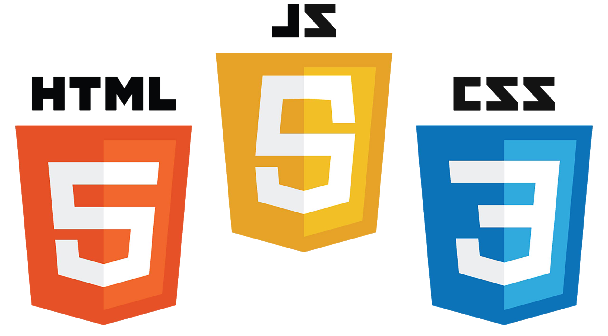

Education
Utah Valley University
Associates Degree — 2013-2016
I earned my associates degree while I was in high school, by going to a school called UCAS where most classes I took were concurrent enrollment and it allowed me to graduate with my associate’s degree from UVU.
Utah County Academy of Science
High School Diploma — 2013-2015
The Odin Project
Online Coding Certification 2020-Current
The Odin Project provides a free open source coding curriculum that can be taken entirely online. Since its inception, it has helped many students get hired as developers and has assisted countless others in learning enough programming to work on their own personal projects.
FreeCodeCamp.com
Online Coding Certification 2020-Current
FreeCodeCamp a nonprofit community that helps you learn to code by building projects.
Skills

History
Team Member, Templemill
Sept 2021 - Current
Inspection Coordinator
Oct 2018-Sept 2021
Collections Manager, Vivint Home Security
Oct 2016 - Oct 2018
Door to Door Sales Rep, Vivint Home Security
Houston, TX
Apr 2016 - Sept 2016